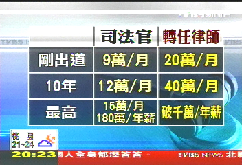
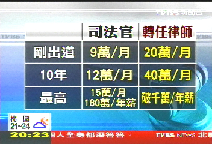

苦難產業鏈：為何我們被逼著傳宗接代？
在我們成長的過程中，總不乏聽見這樣的話語：「人生不如意十之八九」、「吃虧是福」、「吃得苦中苦，方為人上人」、「趕快結婚生子才算成熟與負責任」等等。這些話表面上像是人生智慧，實則是一種長久以來被制度化、內化的苦難教育。這類價值觀的核心，在於將苦難視為值得尊敬甚至感恩的存在，卻無視了它背後可能存在的壓迫結構與經濟利益鏈。
仔細觀察就會發現，社會上不少產業的生存，實際上是建立在「他人的痛苦」之上，例如：
- 醫療產業的龐大利潤建立在病毒與疾病的存在之上
- 整形美容產業依賴於長相不符合大眾審美觀的人類
- 律師事務所的生意來自於各類糾紛與不公
- 禮儀公司、殯儀館、骨灰壇工廠因死亡而存在
- 特殊教育學校靠的是身心障礙兒童的出生
- 媒體娛樂產業靠犯罪、暴力與醜聞吸引眼球
- Rockstar Games開發出《俠盜獵車手》這種影射犯罪與混亂的遊戲並因此大賺一筆（即使是虛擬世界中的苦難與混亂，也能成為獲利來源）
換句話說，這個世界有一條隱形的「苦難產業鏈」，將痛苦轉換為商品、利潤與資源。
在這樣的系統下，生育本身也不再只是個人選擇或家庭事件，而逐漸變成維持社會經濟運轉的工具。新生命意味著新勞力、新消費者、新兵員與新稅源，這解釋了為什麼當年輕人出於經濟能力、顏值、遺傳疾病、社會安全等因素而拒絕生育時，長輩們不但無法諒解年輕人的擔憂和無奈反而用「不負責任」、「膚淺」、「自私」等標籤對年輕人進行道德綁架——因為當越來越多的人拒絕為體系「輸出勞力」與「產出新消費者」時，既得利益者的財路就可能被切斷。
這也讓我們理解，長輩說出「生了就會有辦法！以前的人生活那麼苦，還不是可以生五、六個！」、「什麼叫受苦？你不生就要絕後嗎？」、「我們不就是這樣過來的嗎？」這類話語時，其實並不只是無知或固執，而是一種深層的自我辯護——他們將自己曾經承受的痛苦合理化，並要求後人重複這樣的命運，好讓整個苦難鏈條能順利運作下去。他們不願承認，自己當年的選擇其實是被逼的；也不願面對，如果年輕一代拒絕苦難，他們過去所忍耐的一切就變得毫無意義。
所以啊，一堆人在網路上表示人類應該停止生育應該終結苦難並引來一堆讚，甚至還有人到處傳教並呼籲那些收入和顏值低於平均水準的人們不要生孩子以免製造無謂的痛苦，這些行為乍看之下是在伸張正義與維護和平，但社會的運作模式怎麼可能真的讓他們這樣搞呢？然而，真正成熟的社會不應該是以「複製苦難」來維持運轉，而應該尋求讓人「自由選擇」、並讓苦難不再被制度化的可能。我們不需要為了某個系統繼續壓榨人力與情感，而一代代地去「傳宗接代」。我們更有權質疑：如果這個體系必須靠痛苦來維持，那它值得我們繼續撐下去嗎？
最後我想問一下那些深信「吃虧是福」、「吃得苦中苦，方為人上人」、「傳宗接代才是負責任」等心靈雞湯而辛苦一輩子並生兒育女然後為他們操心一輩子的人們：
你們吃了這麼多年的苦，真的有提升物質水平嗎？還是只覺得苦永遠吃不完且子女也步入你的後塵，而真正的好處都被那些忽悠你吃苦和生小孩的既得利益者搜括走了？
 
